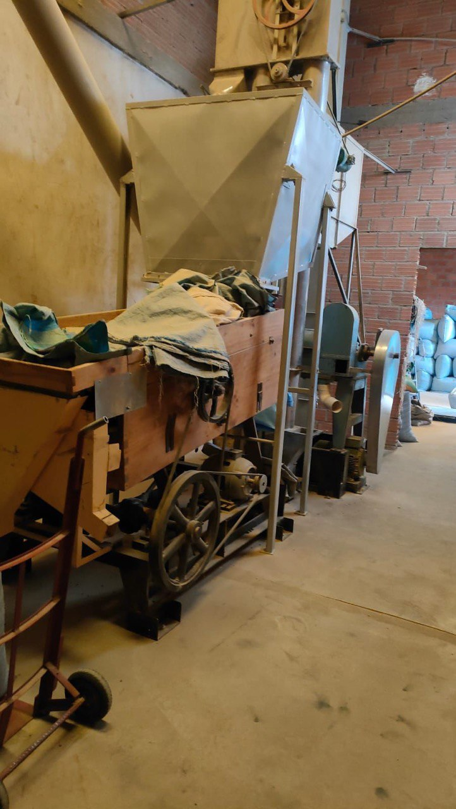

Шаг 1 · Приём и подготовка
Линия первичной обработки принимает ягоды с плантаций и готовит их к дальнейшей переработке.
Ecuador & Bolivia Coffee & Tea Co. объединяет производителей Эквадора и Боливии в единую экспортную платформу андинских чаёв, кофе и Quinua Real.
Andean Sun Blend — андинское солнечное слияние вкусов и идей.
From the Andes’ Heart to your market — мы настроены на долгосрочное партнёрство с инвесторами и дистрибьюторами.

Dos Tierras, Una Pasión
Ecuador & Bolivia Coffee & Tea Co. — платформа, которая соединяет производителей из Эквадора и Боливии с инвесторами и партнёрами по всему миру. Наши регионы — это Анды, Амазония и Альтиплано, где напитки рождаются из высоты, солнца и богатых почв.
Мы развиваем портфель андинских чаёв, кофе и суперфудов Quinua Real — от классики до функциональных и CBD-линеек, сохраняя происхождение и добавляя современный дизайн упаковки и формат сервиса.
Dos Almas, Una Pasión — две души, одно стремление создавать напитки, которые отражают характер Анд и ценность устойчивого сотрудничества.
Andean Sun Blend
Cumbre del Sabor
Линейка классических чёрных и зелёных чаёв с андинским терруаром, купажированных для HoReCa и розницы.
SANGAY & Guayusa Tea Code
Травяные сборы SANGAY с андинскими травами, гуайуса Guayusa Tea Code и другие функциональные напитки для дневной энергии и вечернего восстановления.
Paccha CBD & Altura Dorada
Линии с CBD и специализированные купажи Altura Dorada для SPA, отелей и премиальных чайных карт.
Andean Brews
Высокогорный кофе с высот 1 400–2 000 м над уровнем моря, ферментация на семейных фермах и обжарка под потребности локального рынка партнёра — от эспрессо до фильтра.
Мы выстраиваем цепочку «от фермы до чашки», сохраняя происхождение партий и прозрачность условий кооперации.
Упаковка
Пакеты 1 кг для HoReCa, золотые фольгированные мешки для обжарщиков и stand-up pouch с клапаном для розницы.
Форматы
Линии под private label, co-branding с локальными обжарщиками и собственные бренды Andean Brews.
Quinua Real
Готовые продукты
Лапша, паста, десерты и готовые смеси на основе королевской киноа для ритейла и HoReCa.
Ингредиенты
Зерно, хлопья, мука и puffed-форматы для пищевых производств и функциональных снеков.
Цветовые линейки
Black, red, white и tricolor Quinua Real с прослеживаемым происхождением и устойчивой логистикой.
From cherry to green bean
На станции обработки кофе в Боливии каждая партия проходит полный путь — от свежей ягоды до отсортированного зелёного зерна в мешках, готовых к экспорту. Ниже — живые кадры этого процесса.
Линия первичной обработки принимает ягоды с плантаций и готовит их к дальнейшей переработке.
Спелые кофейные ягоды поступают в бассейн перед депульпацией и сортировкой.
В водных каналах отделяется мякоть, удаляются дефекты и стабилизируется вкус будущего кофе.
Зёрна сушатся на африканских кроватях и площадках под солнцем до целевой влажности.
Команда регулярно переворачивает кофе и убирает дефектные зёрна вручную.
После сушки зёрна проходят по вибростолам и ситам, сортируясь по размеру и плотности.
Отсортированный кофе фасуется в мешки по стандартным экспортным форматам.
Готовые мешки с зелёным кофе ждут отправки на склады и к обжарщикам.
Станция окружена тропическими лесами Боливии — здесь начинается путь нашего кофе.
Финальная проверка и подготовка партий перед формированием контейнеров и отправкой.
Investment highlights
Чай, кофе и суперфуды в одном проекте: больше точек входа на рынок и диверсификация риска.
Линии functional beverages, CBD-продукты и суперфуды соответствуют мировым трендам здоровья.
Высокогорный терруар, уникальные сорта и истории конкретных ферм создают добавленную стоимость бренда.
Продуманные форматы упаковки, логистические цепочки и документация для международных поставок.
Концепты Cumbre del Sabor, Andean Brews и Quinua Real позволяют развивать портфель по разным каналам.
Эквадор и Боливия дополняют друг друга по терруарам, культурам и логистике, создавая устойчивую базу поставок.
Global trends
Мировой рынок здоровых напитков и суперфудов растёт быстрее классической FMCG-категории. Андинские origin-продукты занимают в нём особое место.
Ecuador & Bolivia Coffee & Tea Co. фокусируется на андинском origin, функциональных напитках и Quinua Real как ключевом суперфуде региона.
Партнёрство с локальными инвесторами позволяет адаптировать портфель под конкретный рынок — от HoReCa и specialty-кофе до wellness-ритейла и e-commerce.
Схематичный рост нишевых категорий: superfoods, functional beverages, origin-coffee.
Ayni Brews
В культуре Анд ayni — это взаимный обмен и совместное создание ценности. Мы переносим этот принцип в формат работы с инвесторами и дистрибьюторами.
Инвестиции в развитие брендов на вашем рынке, совместные предприятия, эксклюзивная дистрибуция или участие в экспортном холдинге.
Развитие портфеля, сертификация и логистика, маркетинг и бренд-построение, расширение производственных мощностей и устойчивых коопераций с фермерами.
Долю в растущем андинском портфеле, доступ к origin-продуктам и возможность выстраивать уникальное позиционирование на своём рынке.
From the Andes’ Heart
Проект родился из личных маршрутов по Эквадору и Боливии, встреч с фермерскими семьями и дегустаций, которые невозможно забыть. Мы увидели, как много в Андах качественных продуктов и как мало из них доходит до полок за пределами региона.
Dos Tierras, Dos Almas, Una Pasión — две страны и две команды, которые объединились, чтобы создать устойчивую экспортную платформу напитков и суперфудов. Мы бережно относимся к происхождению, но говорим на языке современного брендинга и digital-каналов.
Наша цель — сделать так, чтобы андинский чай, кофе и Quinua Real стали естественной частью повседневной жизни людей по всему миру.
People behind the project

Отвечает за Эквадор, развитие партнёрств с фермерами и локальными производителями, работу на месте и построение экспортных цепочек поставок.

Курирует стратегию, продуктовый портфель, коммуникацию с инвесторами и дистрибьюторами, digital-поддержку и развитие бренда на международных рынках.
Contacts
Если вы хотите обсудить партнёрство, запросить презентацию проекта или задать дополнительные вопросы, вы можете напрямую связаться с командой Ecuador & Bolivia Coffee & Tea Co. в Telegram.
Формат диалога: кратко расскажите, кто вы, из какой страны и какой формат сотрудничества рассматриваете (инвестиции, дистрибуция, private label и т.д.).